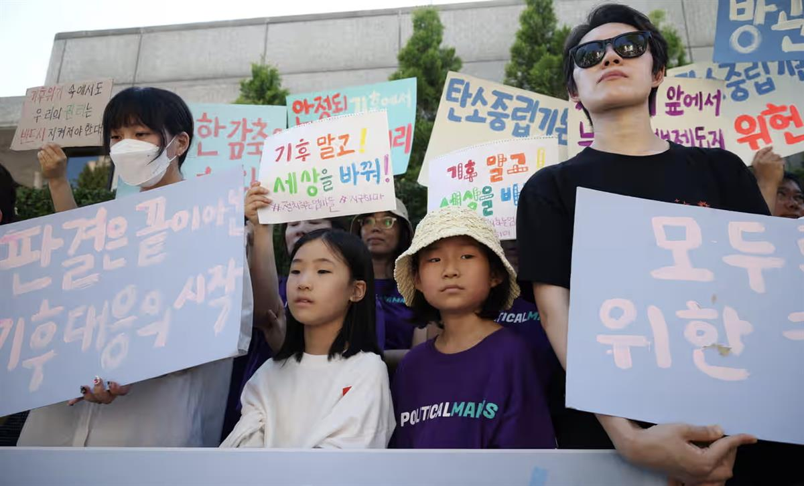
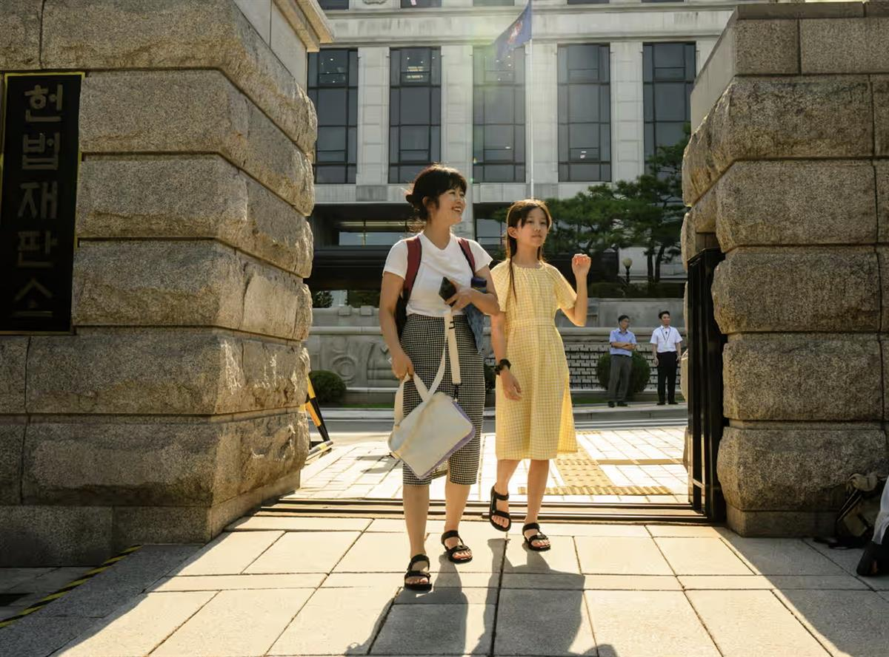
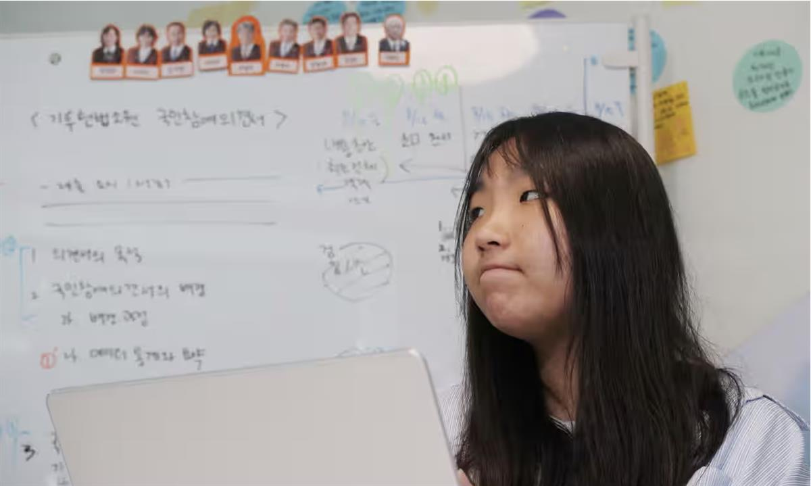

Jeah Han holds a file containing her closing argument outside South Korea’s constitutional court in Seoul in May 2024. The climate campaigner says she has felt the direct impacts of the climate crisis. Photograph: Anthony Wallace/AFP/Getty Images
Jeah Han holds a file containing her closing argument outside South Korea’s constitutional court in Seoul in May 2024. The climate campaigner says she has felt the direct impacts of the climate crisis. Photograph: Anthony Wallace/AFP/Getty Images
ON SOURCE: THE GUARDIAN
Raphael Rashid in Seoul
Wed 4 Sep 2024 01.16 BST
‘Typhoons have prevented me going to school’: The children behind South Korea’s landmark climate win
Hannah Kim, eight, and Jeah Han, 12, are part of a group of activists that won a four-year fight to tackle climate inaction. For them, it is just the beginning
Hannah Kim, eight, was just starting primary school when she joined the “baby climate litigation” to force South Korea’s government to protect the rights of future generations against the dangers of the climate crisis.
Now, with high school still some way off, she is toasting success after winning her part in a four-year legal battle that has set a significant precedent for climate-related legal action in Asia.
“I was so happy when the verdict came out, but mum cried” Hannah says. Her mother, Sujin Namgung, describes how Hannah “was smiling so widely that all her teeth were showing” in the courtroom when the decision was announced.
But for Hannah, and other children in the group, the legal victory is just the beginning.

“The constitutional court listened to the voices of children and adolescents. The national assembly and the government must also listen to our voices”, she says.
Hannah, from Seongnam city, believes the entire world must follow a detailed plan to reduce greenhouse gases, “and we will watch and shout to see if that promise is kept”, she adds firmly.
Last week’s landmark ruling by South Korea’s constitutional court marked a significant victory for climate action in Asia. In a unanimous decision, it found parts of South Korea’s climate law unconstitutional for failing to protect the rights of future generations and passing an excessive burden to them.
The ruling now requires the national assembly to set legally binding greenhouse gas reduction targets for 2031-49 by February 2026. The government issued a statement saying it plans to faithfully implement follow-up measures.
Jeah Han, 12, from Seoul was also part of the lawsuit and says she has felt the direct impacts of climate change. “Typhoons have prevented me from going to school, and changing weather often cancels my favourite physical education classes”, says Jeah.
She has been involved in climate activism since she was 10, and tried various activities such as litter picking and reducing plastic use, but felt disheartened at the lack of results. “No matter what I did, it seemed like the world wasn’t changing for the better,” she says.

Jeah believes carbon reduction goals “should be set more firmly and meticulously than now”. Quoting the constitution, she says, “All citizens have dignity and the right to pursue happiness, but the government does not respect our basic rights.”
‘We don’t want a world where only those with the capacity to be safe survive’
Hyunjung Yoon, 19, realised that picketing alone would not bring change and, at 15, joined the “youth climate litigation” group.
South Korea’s climate litigation began in March 2020 when Youth 4 Climate Action, a group leading the Korean arm of the global school climate strike movement, filed the first lawsuit. Subsequently, three additional lawsuits were consolidated, bringing the number of plaintiffs to 255.
Now a full-time climate activist with Youth 4 Climate Action, Hyunjung sees the court’s decision as a turning point.
“Until now, Korea has responded to the climate crisis as if achieving targets alone was a success”, she explains. “The government never considered how the risks are actually growing or how people’s lives are affected.
“We need to focus on safeguarding our rights, not just hitting numbers”, she says. “Legislation and administration should not repeat past failures. We need law revisions and long-term goals that actually protect people’s rights.”

Hyunjung Yoon, an activist from Youth 4 Climate Action, says governments need to understand how the climate crisis is affecting people’s lives. Photograph: Daewoung Kim/ReutersThe young activist believes their four-year legal action has laid a foundation for future progress.
“We’re not just raising awareness about the severity of the climate crisis. We’re fighting to prevent people’s lives from disappearing because of it”, she says. “We don’t want a world where only those with the capacity to be safe survive. We’re striving for a society that controls risks and ensures safety for everyone, without excluding anyone.”
Looking to the future, 12-year-old Jeah feels she is not asking for much.
“I just wish the world could at least stay as it is now.”
ON SOURCE: THE GUARDIAN